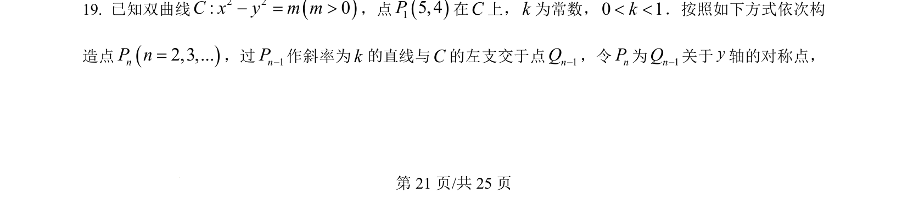
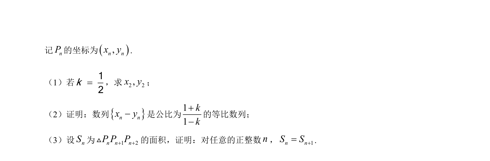
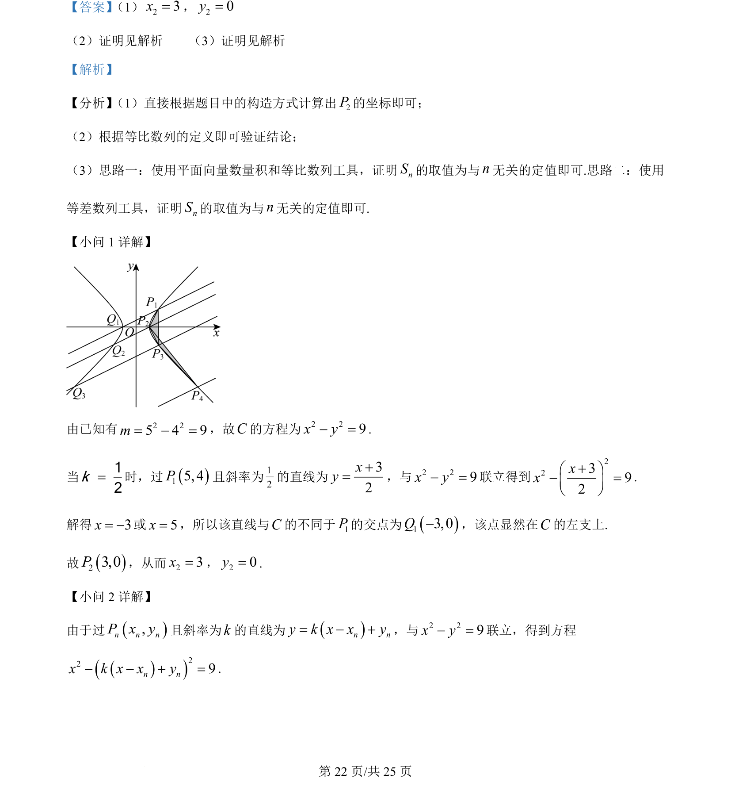
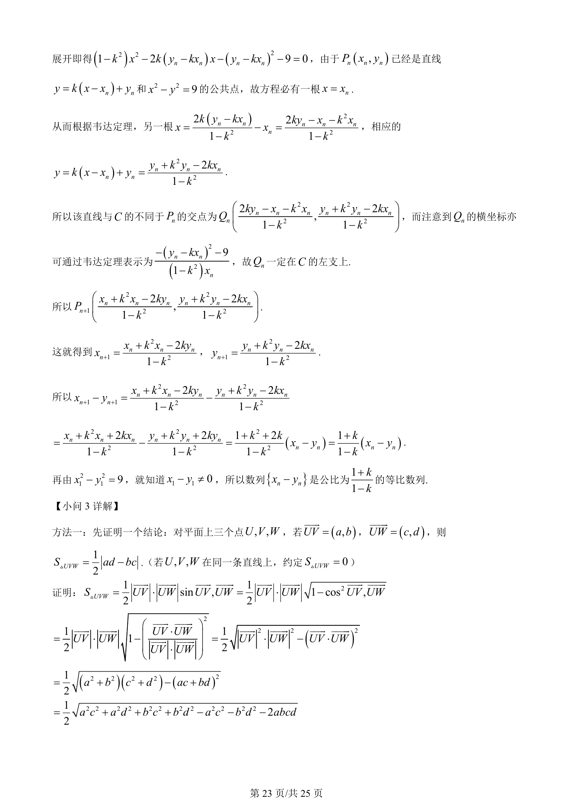
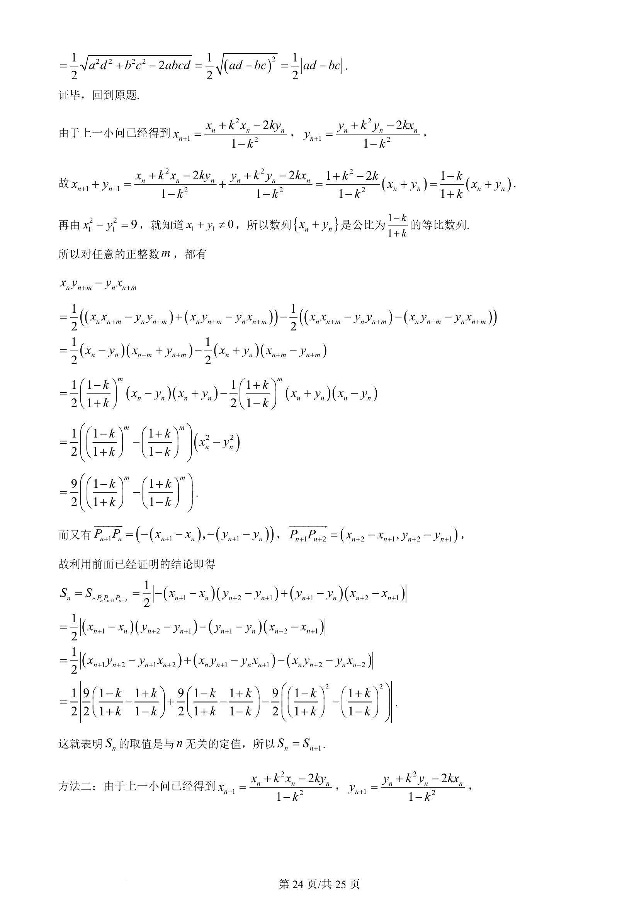
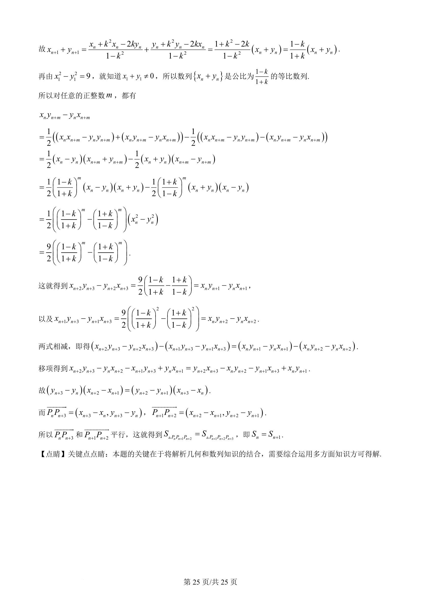

考点：双曲线标准方程 直线方程 对称性 递推关系
双曲线标准方程
直线方程
对称性
递推关系


本题通过双曲线上已知点与斜率递推构造对称点列，考查直线与双曲线位置关系及几何变换。




📄 原 PDF 第 21 页：素材/真题/吉林/2008-2024·（吉林）数学高考真题/2024年高考数学试卷（新课标Ⅱ卷）（解析卷）.pdf
素材/真题/吉林/2008-2024·（吉林）数学高考真题/2024年高考数学试卷（新课标Ⅱ卷）（解析卷）.pdf